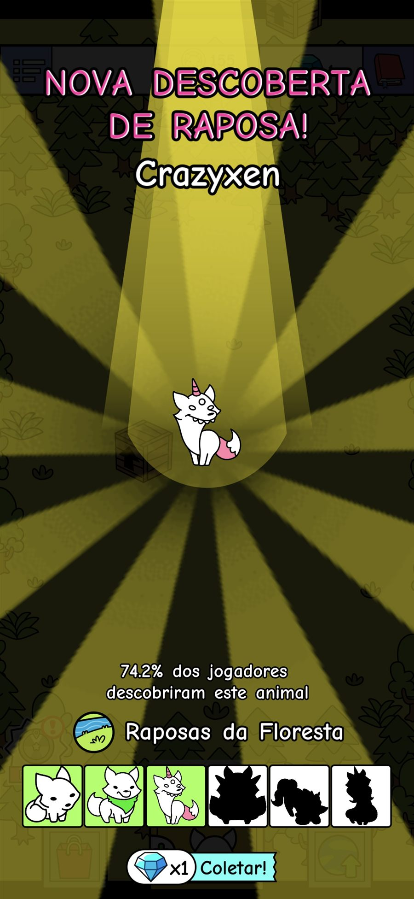
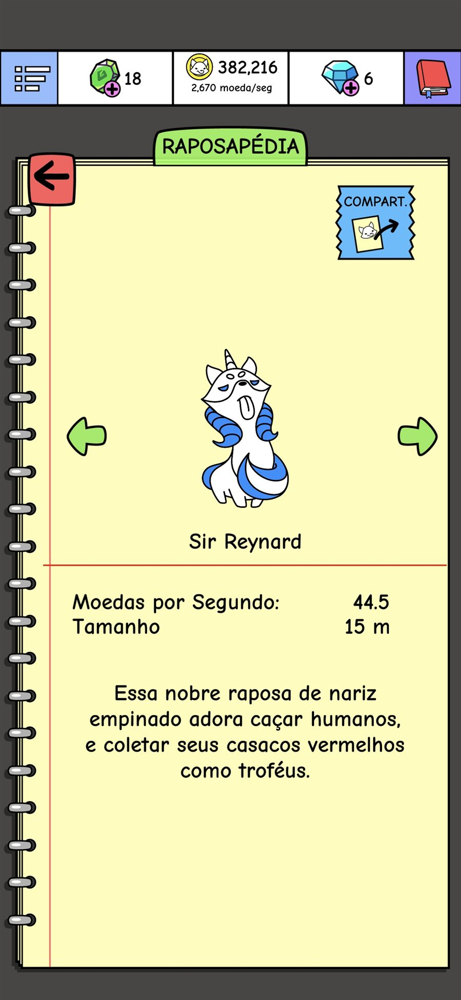
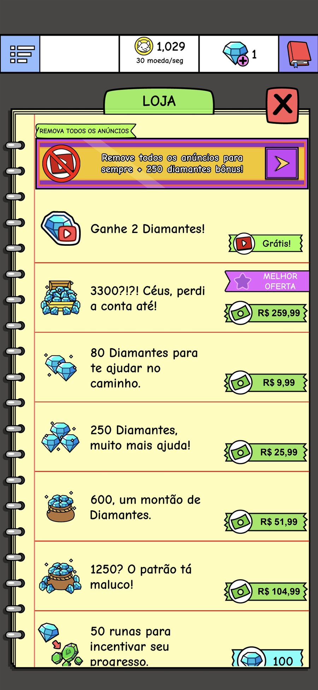
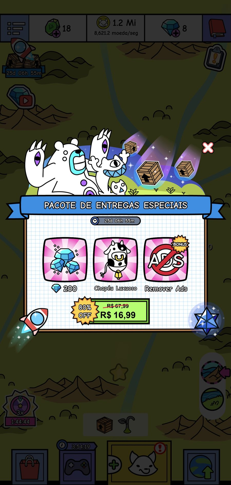
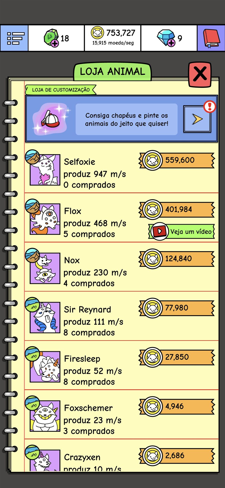
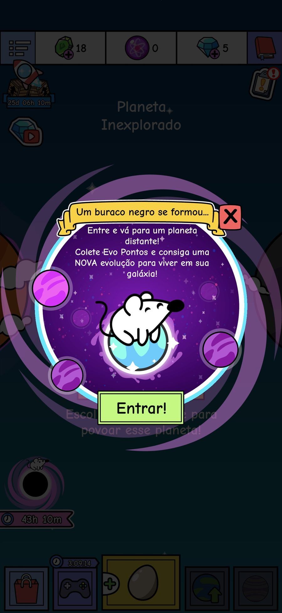
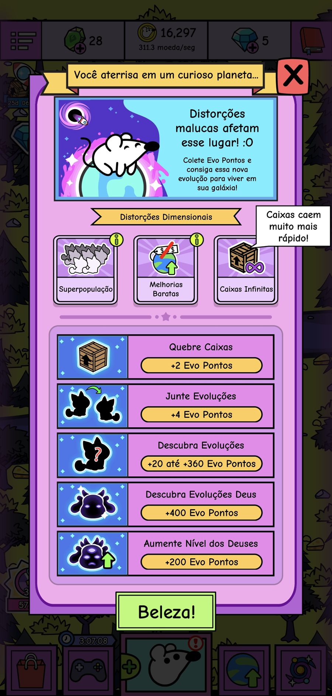

Evolution Galaxy: Mutant Merge é um jogo de merge e idle free-to-play que leva a série de evolução para o espaço. O jogador arrasta e combina criaturas para evoluir novos mutantes e usa os ovos e toques rápidos para ganhar as moedas que liberam mais espécies. Cada planeta traz um tema próprio, deuses para descobrir e impostores, tudo em um estilo de ilustração doodle.
Entrei no Evolution Galaxy quando o jogo já estava no ar, como a única game designer de um time de cinco pessoas. Por ser um jogo mais antigo, a principal batalha era contra a queda natural de relevância nas lojas.
A meta do time era maximizar as métricas do jogo com o mínimo de recursos possível, com testes A/B orientados por dados e a migração da monetização de anúncios para compras dentro do app (IAP).
A mecânica de descoberta de criaturas recebeu uma melhoria na enciclopédia: O jogador passa a ter noção de quantas criaturas ainda faltam descobrir. Essa percepção do que falta mantém o jogador motivado e dentro do jogo, em um efeito semelhante ao de uma Pokédex, em que as silhuetas do que ainda não foi encontrado transformam a coleção em uma meta clara e cada nova descoberta em um pequeno momento de recompensa.


Uma economia balanceada e uma monetização que atua no momento da necessidade se reforçam. Quando preços, ganhos e progressão são ajustados em conjunto, o jogador sempre tem uma próxima meta ao alcance, e uma compra parece um atalho e não uma obrigação. Ofertas que aparecem quando o jogador precisa de algo, como mais moeda para liberar a próxima criatura, são aceitas como ajuda e não como pressão. Isso protege a confiança e a retenção ao mesmo tempo em que sustenta a receita, e mantém o jogo saudável no longo prazo.



Um conjunto de features criadas para melhorar a experiência do jogador: Momentos de surpresa que quebram a rotina do loop idle, um minigame que alimenta a economia com uma nova moeda e um sistema de missões que guia o jogador e dá um propósito a cada sessão.
No começo, o jogador acredita que está cultivando um planeta com uma raça. Depois de descobrir o Deus daquela raça, o jogo se expande em muito mais possibilidades: O jogador pode criar outras raças, o que alimenta a vontade de colecionar seus bichinhos favoritos. Isso traz longevidade ao jogo reaproveitando as mesmas mecânicas, expandindo o conteúdo sem precisar construir um novo loop central.
Nos eventos temporários, o jogador joga uma versão do jogo com modificadores para obter uma raça exclusiva para cultivar em seus planetas. O trabalho de design foi balancear os eventos e criar uma trilha de recompensas interessante o suficiente para trazer o jogador de volta toda semana em busca da nova raça.


O sistema de customização permite que o jogador enfeite suas criaturas com chapéus e cores, trabalhando expressão e personalização. Ele dá à economia um uso além da progressão e aumenta o apego do jogador a cada criatura.
A visibilidade nas lojas cai naturalmente com o tempo, e um time pequeno tem pouco espaço para grandes reformulações. A resposta foi priorizar mudanças de alto impacto e baixo custo e construir sistemas que pudessem ser otimizados e reaproveitados em campanhas, em vez de refeitos a cada vez.
Mudar a forma como um jogo ganha dinheiro afeta toda a experiência. Aumentar a receita de IAP exigiu tratar a loja, as ofertas e a economia como um único sistema, e trocar a intuição por testes: Preço, composição, frequência e momento de exibição de cada oferta foram testados.
Com um time pequeno, cada mudança precisava justificar o seu custo. As decisões seguiam um ciclo: Comparar versões em testes A/B, ler as métricas de cada uma e transformar o que funcionou em um sistema que pudesse ser aplicado de novo.
Apesar da queda natural de relevância de um jogo mais antigo, as métricas do Evolution Galaxy se mantiveram estáveis durante o período de atuação no projeto.
Em um jogo maduro, a relevância se conquista com passos pequenos e medidos e com ferramentas que podem ser reaproveitadas.